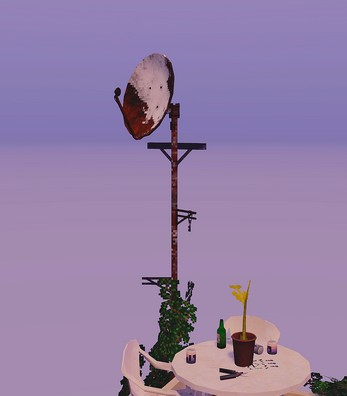
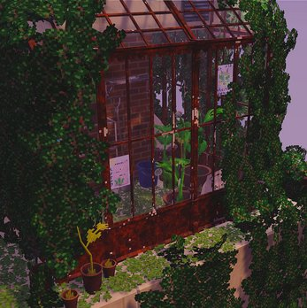
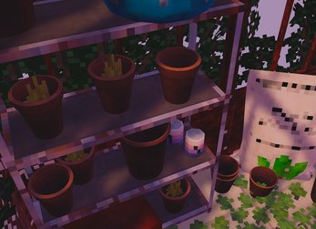

A Lonely Greenhouse is a hidden-object-puzzle style game i made in Unity. it features a 3D pixel-art style, a simple interaciton system, collectibles, a puzzle progression and goal, and some lore as well.
i was strongly inspired by the game Cloud Gardens for its beautiful lofi vibe and pixel-art style. i spent a long time when i was younger playing Big Fish puzzle games for iPad, which invovled finding hidden objects around 2D scenes, and often then using those objects to unlock further places. in that way, this is a little homage to that.
 explore the world and solve the mystery
explore the world and solve the mystery

every part of the game besides the audio was created by me, mostly using Blender. the sound effects are taken from Freesound.org, and credited appropriately in-game. the game was very kindly playtested by some friends, and we had fun competing to speedrun the game. the record is 1m40s by the way.
the assets all use a 2cm approximate texel density. many of the textures i created using Blender's procedural shader nodes, combined with manual touchups and some custom painting on several objects.
i had a lot of fun creating this game; i made a whole greenhouse kit (i originally planned to make multiple levels but scoped back a fair bit), a collection of pot types, a metal pipe kit, and several types of plants.
the ivy growing over the structure is actually generated procedurally using a Unity editor tool i wrote myself, something i learned how to make just for this project. oh, and you can cut the ivy away dynamically in the game (in fact, you need to to find everything).


i strongly recommend playing the game for yourself, it's downloadable from the Itch page linked above, and is under 50MB.